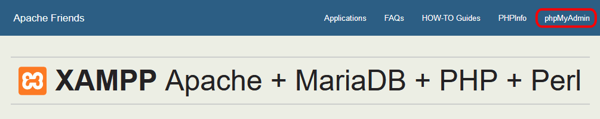
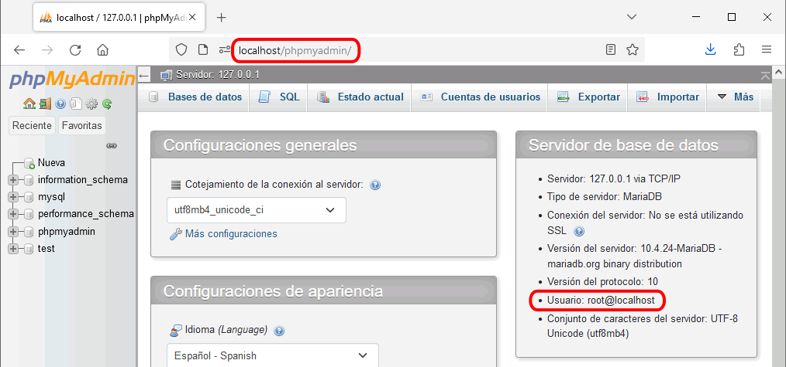
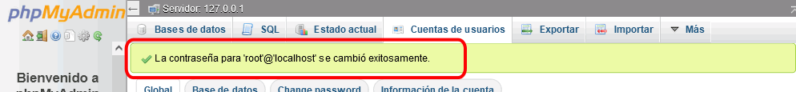
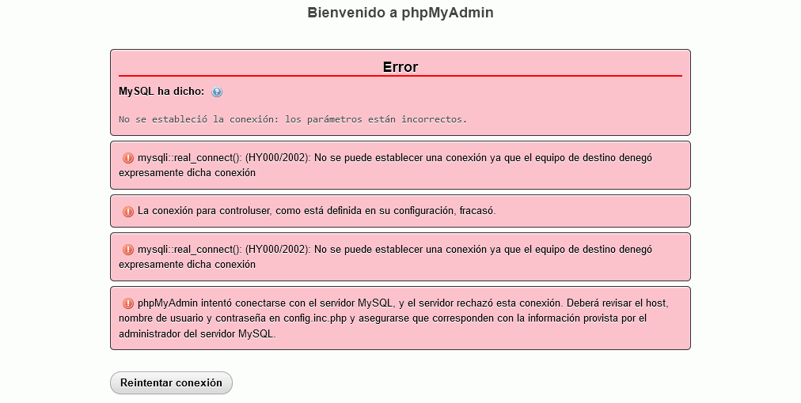

phpMyAdmin (1) 1 - phpMyAdmin de XAMPP
XAMPP incluye una versión de phpMyAdmin que se encuentra en la carpeta /xampp/phpMyAdmin. Para ponerla en marcha, se puede:
- abrir el panel de administración web (http://localhost) y hacer clic en phpMyAdmin:

- abrir directamente la dirección http://localhost/phpmyadmin/.
El phpMyAdmin de XAMPP está configurado inicialmente para conectarse directamente a MySQL/MariaDB como usuario root sin contraseña, ya que esta es la configuración inicial de MySQL/MariaDB cuando se instala XAMPP. En este ejercicio se supone que no se ha modificado todavía esa configuración inicial.
- Abra el phpMyAdmin de XAMPP para comprobar que se conecta a MySQL/MariaDB como usuario root.

- Compruebe qué versión de phpMyAdmin está instalada con XAMPP. No es necesario actualizar ahora phpMyAdmin.
- Modifique mediante phpMyAdmin la contraseña del usuario root en MySQL/MariaDB y establezca como contraseña root.

Notas:
 En un sistema real, una contraseña tan simple se consideraría un grave fallo de seguridad del sistema, pero en estos apuntes se utilizan como contraseñas los nombres de los usuarios.
En un sistema real, una contraseña tan simple se consideraría un grave fallo de seguridad del sistema, pero en estos apuntes se utilizan como contraseñas los nombres de los usuarios.
- Compruebe que ya no puede conectarse a MySQL/MariaDB mediante el phpMyAdmin de XAMPP:

- Para poder conectarse como usuario root con contraseña root, modifique la variable de configuración correspondiente en el archivo de configuración de phpMyAdmin config.inc.php que se encuentra en la carpeta del phpMyAdmin de XAMPP.
Antes de modificar cualquier archivo de configuración, haga una copia de seguridad del archivo de configuración anterior. Y al modificar un archivo de configuración, documente siempre en el propio archivo los cambios realizados.
- Compruebe que puede conectarse de nuevo a MySQL/MariaDB:
- Modifique la contraseña del usuario root en MySQL/MariaDB y en el archivo de configuración de phpMyAdmin, dejándolo de nuevo sin contraseña, y compruebe que puede conectarse.